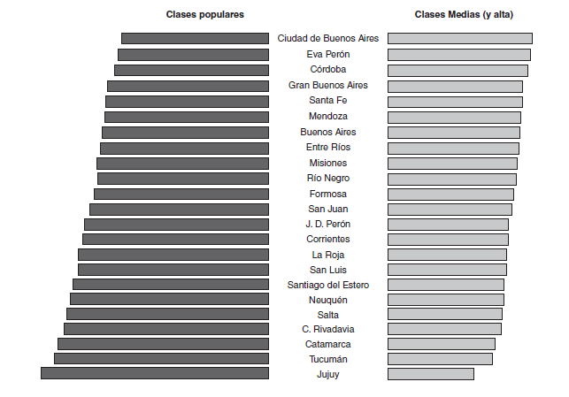

8.2 La dimensión espacial
La dimensión espacial es otro de los elementos que todo estudio de la estructura social y de las clases sociales debería considerar. Como bien señala Osorio (2001, p. 51) ésta remite al vínculo sociedad-naturaleza, al clima y a las condiciones geográfico-naturales que desempeñan un papel fundamental en la historia. Naciones, provincias, departamentos y hasta ciudades condensan una serie de heterogeneidades en su interior y entre sí mismas, que obligan al investigador a considerarlas en su fase de análisis.
Claro está que no siempre contamos con las fuentes de información óptimas para abordar dicha heterogeneidades geográficas. Por ejemplo, con la EPH, fuente que venimos utilizando en este libro, podemos tener una desagregación espacial para el país por aglomerados, provincias o regiones, pero siempre considerando a la población urbana encuestada. Algo similar sucede con otras encuestas de hogares como la ENES-PISAC.
Por el contrario, la información censal nos permite acceder a un nivel de desagregación geo-estadísticas de mayor precisión, tales como las fracciones y los radios censales. De esta forma, el mosaico de heterogeneidades sociales que podemos representar se vuelve más complejo a través de este tipo de fuente de datos.
Gráfico 8.5: Ejemplo de unidades geo-estadísticas del INDEC. 1) Provincias; 2) Departametnos; 3) Fracciones censales; 4) Radios censales. Fuente: elaboración propia en base a Cartografía y códigos geográficos del Sistema Estadístico Nacional
8.2.1 Algunos ejemplos de la bibliografía
Por limitaciones de las fuentes de información, en los estudios de estructuras de clases, cuando se cruzan los datos construidos con información espacial se suelen hacer comparaciones entre unidades de mayor nivel, tales como los países o las provincias y regiones dentro de las naciones. Por ejemplo, el análisis de Solís, Chávez Molina y Cobos (2019) se compara la estructura de clases reciente en 9 países latinoamericanos. Para ello se recurrió a información específica proveniente de encuestas de hogares de cada uno de los países seleccionados, que luego fue armonizada para poder ser comparable.
Gráfico 8.6: Estructura de clases en países de América Latina. Población entre 15 y 64 años. 2011-2015. Solís, Chávez Molina y Cobos (2019, pp 861)
En Argentina, al igual que para el caso del análisis en el tiempo, los trabajos de Germani, Torrado también abordaron el análisis de la dinámica del cambio en la estructura de clases en agregados geográficos subnacionales.
Gráfico 8.7: Estructura de clases en las distintas jurisdicciones del país. Gráfico extraído de Germani et al. (2010)
Posteriormente, bajo la asesoría general de Susana Torrado, desde Consejo Nacional de Inversiones (CFI, 1988), se elaboraron informes para cada una de las provincias y el total país, en donde se caracterizaba la estratificación social y las condiciones de vida de la población, teniendo como fuente de datos el Censo Nacional de Población y Vivienda de 1980. Gran parte de dicho análisis fue retomado luego y publicado en el libro Estructura social de la Argentina, 1945-1983 (Torrado, 1992).
Gráfico 8.8: Indicadores de la estructura social por regiones. 980. Torrado (Torrado, 1992, pp 386)
![Indicadores de la estructura social por regiones. 980. Torrado [@Torrado1992, pp 386]](imagenes/torrado_regiones.png)
Actualmente, con el avance y la difusión de la utilización de sistemas de información geográfica (SIG), se abrió la posibilidad de representación gráfica a través de mapas temáticos de información censal o proveniente de encuestas de hogares. Si bien aún en los estudios de estructura de clases no se ha tornado en una práctica frecuente, cada vez aparecen más trabajos que recurren a la representación geográfica de los datos para ilustrar los cambios y la evolución en la estructura social y de clases.
Por ejemplo, Mike Savage y otros (2013) llevaron a cabo junto a la BBC una encuesta de representación nacional (BBC’s 2011 Great British Class Survey), a través de la cual, a partir de la técnica de clases latentes, presentaron un nuevo abordaje en el estudio de las clases sociales conformado a partir de 7 clases. En ese trabajos, los autores recurren a una serie de mapas para demostrar cómo dichas clases se distribuyen al interior de Gran Bretaña.
Gráfico 8.9: Distribución espacial de la clase trabajadora tradicional. Savage et al. (2013, pp 241)
8.2.2 Ejemplo práctico
Ahora veremos como llevar a cabo un análisis de clase según información espacial. Cómo dijimos anteriormente, la profundidad del tipo de análisis que podamos realizar va a depender del tipo de fuente con la que trabajemos. En este caso, vamos a aprovechar el pool de bases de EPH que hemos pegado para los años 2011 a 2015.
En forma simple vamos a indagar como se distribuyen las clases sociales al interior de cada una de las regiones identificadas por INDEC. En primer lugar, construyamos una tabla (no mostrada) de doble entrada que nos permita mostrar dicha información.
# 1) Creo una variable factor con los nombres de las regiones (region_f)
eph_1115_ocup$region_f <- factor(eph_1115_ocup$REGION, labels = c("GBA", "NOA", "NEA",
"Cuyo", "Pampeana", "Patagonia"))
# 2) Construimos un objeto tabla cruzando la variable clase6_factor y region_f
tabla_regiones <- eph_1115_ocup %>%
filter(!is.na(clase6_factor)) %>%
group_by(region_f, clase6_factor) %>%
tally(wt = PONDERA) %>%
group_by(region_f) %>%
mutate(percent = round((n/sum(n)) * 100, digits = 2)) %>%
select(clase6_factor, region_f, percent) %>%
spread(region_f, value = percent)Finalmente presentamos un ejemplo de representación de la tabla anteriormente construida en un mapa temático. R posee varias librerías para manipular información de tipo geográfica. En este caso utilizaremos el paquete sf. Lo que haremos es representar en mapas en miniatura de Argentina, el porcentaje de individuos pertenecientes a cada clase social por región.
A los fines de este ejemplo, trabajaremos con la cartografía por departamentos que proporciona INDEC (https://www.indec.gob.ar/indec/web/Institucional-Indec-Codgeo). Si bien no es la finalidad de este libro introducir el uso de herramientas SIG14, a continuación presentamos el procedimiento “paso a paso” para la creación del mapa temático.
# 1) Cargamos el archivo .shp y lo guardamos en el objetivo espacial
# 'argentina'
argentina <- st_read("cartografia/argentina_n.shp")Reading layer `argentina_n' from data source
`/Users/nxs851/GitHub/academia/teaching/UNTreF/clases-arg/cartografia/argentina_n.shp'
using driver `ESRI Shapefile'
Simple feature collection with 1242 features and 10 fields
Geometry type: POLYGON
Dimension: XY
Bounding box: xmin: -74 ymin: -90 xmax: -25 ymax: -22
Geodetic CRS: WGS 84# 2) Filtramos al territorio antártico ya que no contamos con información en la
# EPH y se dificulta la visualización del mapa
argentina <- argentina %>%
filter(!link %in% c("94028"))
# provincias <-
# st_read('E:/OneDrive/Otros/proyectos_R/mapas/Codgeo_Pais_x_prov_datos/provincias_n.shp')
# 3) Creamos un vector con los 31 códigos geográficos de los 31 partidos del
# GBA
partidos <- c("06028", "06035", "06091", "06134", "06252", "06260", "06270", "06274",
"06364", "06371", "06408", "06410", "06412", "06427", "06434", "06490", "06515",
"06525", "06539", "06560", "06568", "06638", "06648", "06658", "06749", "06756",
"06760", "06778", "06805", "06840", "06861")
# 4) Definimos dentro del objeto geográfico 'argentina' a la columna link como
# caracter y a la columna codpcia como numérica
argentina$link <- as.character(argentina$link)
argentina$codpcia <- as.numeric(argentina$codpcia)
# 5) Creamos en el objeto 'argentina' una variable llamada REGION que agrupe a
# las provincias igual que en la EPH
argentina <- argentina %>%
mutate(region_f = case_when(codpcia == 2 | (link %in% partidos) ~ "GBA", codpcia ==
10 | codpcia == 38 | codpcia == 46 | codpcia == 66 | codpcia == 90 | codpcia ==
86 ~ "NOA", codpcia == 18 | codpcia == 22 | codpcia == 54 | codpcia == 34 ~
"NEA", codpcia == 50 | codpcia == 70 | codpcia == 74 ~ "Cuyo", (codpcia ==
6 & !(link %in% partidos)) | codpcia == 30 | codpcia == 14 | codpcia == 82 |
codpcia == 42 ~ "Pampeana", codpcia == 58 | codpcia == 62 | codpcia == 26 |
codpcia == 78 | codpcia == 94 ~ "Patagonia"))
# 6) Volvemos a crear una tabla con los porcentajes de individuos por clase
# sociales según región, pero esta vez en formato largo
tabla_larga <- eph_1115_ocup %>%
filter(!is.na(clase6_factor)) %>%
group_by(region_f, clase6_factor) %>%
tally(wt = PONDERA) %>%
group_by(region_f) %>%
mutate(percent = round((n/sum(n)) * 100, digits = 2))
# 7) Unimos el objeto 'argentina' con la tabla larga que contiene los
# porcentajes por clase y región, tomando como variable identificadora REGION
mapa <- merge(argentina, tabla_larga, by = "region_f", all.x = TRUE)Puntualmente, el comando geom_sf del ggplot2 nos permitirá superponer capas con información georreferenciada, como en este caso los departamentos del país. A su vez, el comando facet_wrap del mismo paquete nos permite representar un gráfico (en este caso un mapa) para la variable que seleccionemos (clase social).
ggplot() +
geom_sf(data = mapa, aes(group = region_f, fill = percent), color = NA) +
theme_map() +
labs(fill = "% Clase social",
title = "Distribución de las clases sociales por región",
subtitle = "Población ocupada. Argentina urbana 2011-2015.",
caption = "Fuente: Elaboración propia en base a EPH-INDEC 2011-2015.") +
theme(legend.title = element_text(size = 10, face = "bold"),
legend.text = element_text(size = 9),
legend.key.width = unit(1.5, "cm"),
legend.position = "bottom",
legend.justification = "center",
plot.title = element_text(size = 12, face = "bold"),
plot.subtitle = element_text(size = 11),
plot.caption = element_text(size = 10, hjust = 1),
strip.text = element_text(face = "bold", size = 10)) +
scale_fill_viridis_c(direction = -1) +
facet_wrap(~clase6_factor, ncol = 7, labeller = labeller(clase6_factor = label_wrap_gen(15)))Gráfico 8.10: Ejemplo de mapa temático utilizando la variable clase social

Recomendamos el manual Ciencia de datos para gente sociable, específicamente su capítulo 6, para quienes quieran profundizar en el tema↩︎